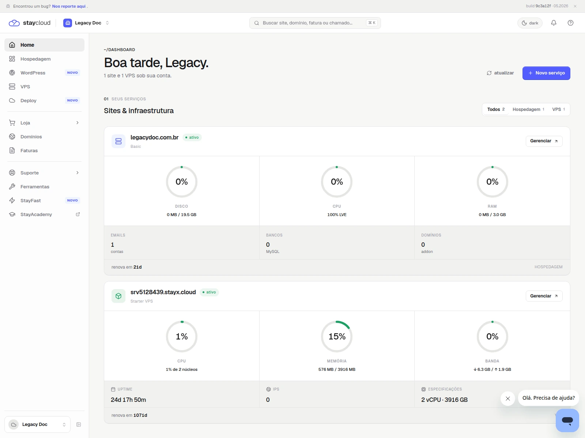
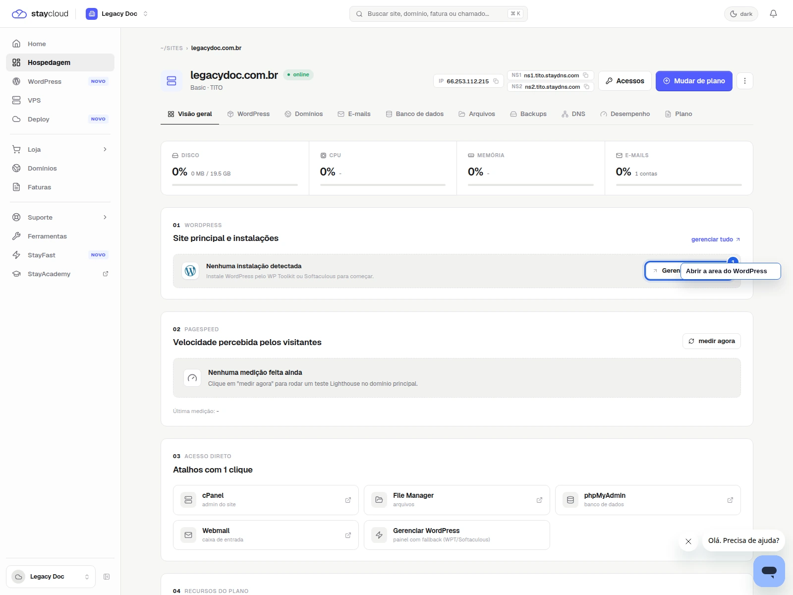
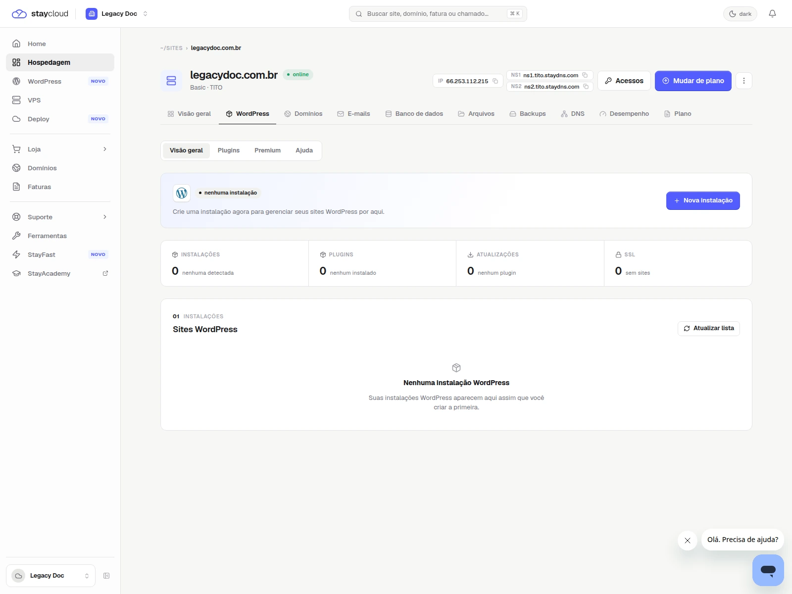
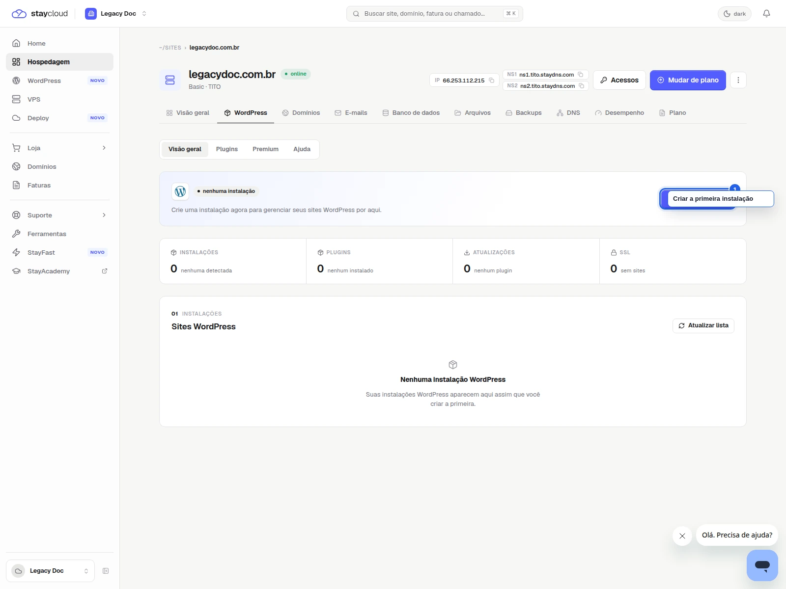

StayCloud · Painel Novo · lote 01
Como acessar o WordPress pelo Painel Novo da StayCloud
Aprenda a localizar sua hospedagem e abrir o acesso ao WordPress pelo Painel Novo da StayCloud com mais segurança.
Rascunho local
como acessar o WordPress pelo Painel Novo da StayCloud
como-acessar-wordpress-painel-novo-staycloud
rascunho local
Objetivo
Aprenda a localizar sua hospedagem e abrir o acesso ao WordPress pelo Painel Novo da StayCloud com mais segurança.
Resumo de validação
1. Abra o Painel Novo e localize sua hospedagem
Entre no Painel Novo e encontre a hospedagem que deseja gerenciar antes de seguir.

2. Clique em Gerenciar na hospedagem correta
Abra a visão da hospedagem que você quer configurar. Assim, você continua no ambiente certo.

3. Localize a área de WordPress
Na tela da hospedagem, procure a área de WordPress ou o bloco equivalente de gerenciamento.
Se aparecer Nenhuma instalação detectada, siga para a criação da primeira instalação.

4. Abra o acesso ou inicie a primeira instalação
Use a opção disponível para abrir o WordPress da hospedagem selecionada ou iniciar a primeira instalação, se ainda não houver uma ativa.

Alertas e apoio
Não mostrar credenciais, domínio incorreto, cookies, token ou qualquer dado de administração real.
Quando abrir ticket
- se o WordPress não aparecer na hospedagem correta;
- se a página carregar com erro;
- se a permissão da conta impedir o acesso;
- se o painel mostrar algo diferente do fluxo descrito.
Checklist visual e editorial
- objetivo claro em poucos segundos
- ordem dos passos lógica
- prints com contexto suficiente
- marcações visuais úteis e sem poluição
- linguagem simples para a leitura final